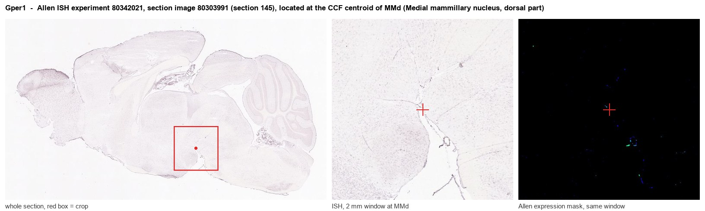
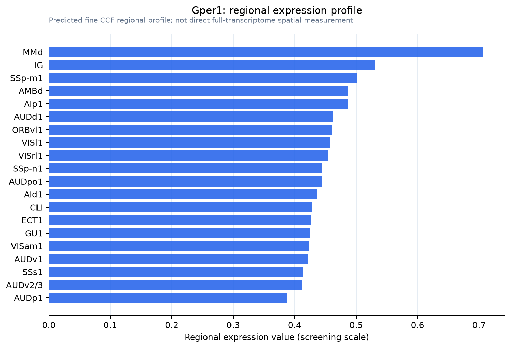

Gper1
G protein-coupled estrogen receptor 1 (Chemoattractant receptor-like 2) (G protein-coupled receptor 30) (Membrane estrogen receptor) (mER)
Spatial tier: REGION_BIASED · Class: GPCR · Top region: MMd (Medial mammillary nucleus, dorsal part) · Positive regions: 53/554
Function in MMd: evidence, prediction, innovation
- Gene function
- GPER1 (GPR30) is a seven-transmembrane G protein-coupled receptor that binds 17-beta-estradiol at the plasma and endoplasmic reticulum membrane and signals within seconds through Gs/cAMP-PKA and EGFR transactivation to ERK and PI3K. It mediates the rapid, non-genomic arm of oestrogen action that is independent of the nuclear receptors ERalpha and ERbeta, and can also drive STAT3 phosphorylation.
- Region function
- The medial mammillary nucleus is the hypothalamic node of the Papez/extended hippocampal circuit: it receives subicular input via the fornix and projects through the mammillothalamic tract to the anterior thalamic nuclei, supporting theta-paced spatial and episodic memory.
- Published in this region
- inferred No region-specific literature found. The closest findings are in neighbouring hypothalamus: Kwon 2014 showed that the GPER1-selective agonist G-1 triggers STAT3 phosphorylation in hypothalamic neurons and suppresses food intake, while Jiang 2019 found ~80% of activated paraventricular hypothalamic neurons express GPER1.
- Predicted function
- Prediction: in dorsal medial mammillary neurons GPER1 most plausibly acts as a fast oestrogen-sensitive gain control on the subiculum-to-anterior-thalamus relay, depolarising or facilitating burst firing through Gs/cAMP and thereby coupling gonadal-steroid state to mammillothalamic theta. Local G-1 infusion or Gper1 knockout should shift mammillary firing rate and theta coherence and produce oestrous-cycle-dependent differences in spatial working memory (T-maze alternation, radial arm maze) without affecting gross locomotion.
- Innovation
- ★★★★★ 5/5 GPER1 has been studied extensively in arcuate, PVN and hippocampus but essentially never in the mammillary bodies, despite a well-defined memory circuit and ready pharmacology.
- Tools
- Selective agonist G-1 and antagonists G-15/G-36; Gper1 knockout mouse lines; commercial anti-GPER1 antibodies; mammillary access via Foxb1-Cre (labels mammillary body neurons) combined with stereotaxic AAV.
- References
Direct evidence located at the region

Allen ISH experiment 80342021, section image 80303991 (section 145): the section that contains the CCF centroid of Medial mammillary nucleus, dorsal part according to the Allen image-to-atlas alignment (reference_to_image), with a 2 mm window around that point. Left: whole section, red box = window. Middle: ISH signal. Right: Allen's expression-mask view of the same window. open this image in the Allen viewer
Direct spatial evidence

Regional expression figure

Predicted WMB × fine-CCF profile; not direct full-transcriptome spatial measurement.
Spatial profile
Evidence and specificity
- Evidence status
- PREDICTED_FINE
- Direct sources
- None; predicted localization only
- Exclusive threshold
- 12 positive regions out of 554
- Spatial specificity
- 0.277
- Top-region fraction
- 0.040
- Filter status
- PASS
Interpretation limits
- Cell-type-to-region projection is imputed expression, not direct spatial measurement.
- Adult reference atlases do not establish stability across age, sex, strain, state, or disease.
- Transcript abundance does not guarantee protein abundance or genetic-tool performance.